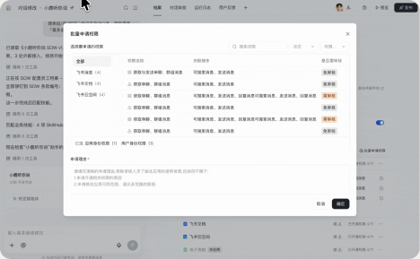

不知道有哪些技能，也无法自主选择
之前是纯黑盒逻辑，看不到智能体已经内置了哪些飞书技能，也无法按需开启或关闭，难以掌控它能做什么。

Anyclaw智能体的主要应用场景在飞书，很多功能需要飞书对应的能力权限才能使用，比如写文档就需要开通飞书文档读写能力、发消息需要开通发消息的能力。
目前智能体接入的飞书 CLI 配套了 19 个飞书技能，覆盖文档、表格、日历、消息等核心业务域。每个技能下的具体能力，都可以通过飞书开放平台的权限配置单独开启或关闭。
之前的飞书技能和权限都是黑盒逻辑，用户在使用的时候经常由于缺乏某项权限来提 oncall
之前是纯黑盒逻辑，看不到智能体已经内置了哪些飞书技能，也无法按需开启或关闭，难以掌控它能做什么。
不了解技能与权限的对应关系，也看不到默认已申请的权限，难以判断还需要补充什么。
开通权限需要前往飞书开放平台申请并完成应用发布。跨平台操作繁琐、引导不足，用户难以顺利完成。
让用户看得清技能、理得清权限，并在明确引导下顺利完成开通，实现智能体能力的按需配置与使用
清晰展示智能体具备的飞书技能及其用途，支持自主启停，帮助用户理解并掌控智能体的能力边界
飞书技能比较多，如果平铺，默认两行宽度也展示不下，所以我们进行了汇总，将飞书权限聚合展示
建立技能、操作与权限的对应关系，明确已开通和待补充的权限，让用户知道需要申请什么、还缺什么
该方案虽然提供了权限申请入口，但是用户并不知道开通什么权限，用户都是在调试或实际使用的时候发现权限缺失才想要开通。

通过对话串联权限申请与应用发布流程，提供清晰的步骤说明、操作入口和进度反馈，引导用户完成跨平台操作。
方案上线后我们观测了一个月的数据，发现整体结果还是比较正向的
权限问题周 oncall 占比
这次优化让我意识到，权限配置的设计需要贴合用户的真实场景与使用路径。在用户测试或使用智能体、遇到权限缺失时，提供针对性的说明、申请入口和步骤引导，能帮助用户清楚地理解缺少什么、为什么需要，以及如何完成开通。
设计师的价值之一，就是将依赖平台知识的复杂配置，转化为围绕用户任务展开、易于理解且能够顺利完成的操作流程。